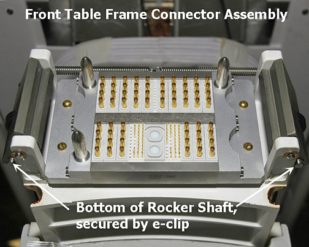
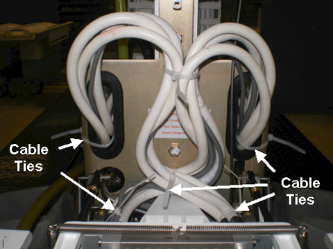

Operating Documentation
Direction 5500113, Rev# 3
Module Version 5.0, Version Date 12/7/09
Operating Documentation |
| ||||
| Personal Injury possibility! | ||||
| severe personal injury can occur if table is accidentally lowered during maintenance performance. | ||||
| when performing maintenance on the table in its up position, ensure that the lock bar is safely in place. |
Undock Patient Table and move it out of magnet room.
Remove Lower Base Covers. Refer to the Patient Table Upper and Lower Base Cover Removal procedure.
Raise Patient Table to full up position.
| ||||
| PERSONAL INJURY POSSIBILITY! | ||||
| SEVERE PERSONAL INJURY CAN OCCUR IF TABLE IS ACCIDENTALLY LOWERED DURING MAINTENANCE PERFORMANCE. | ||||
| WHEN PERFORMING MAINTENANCE ON THE TABLE IN ITS UP POSITION, ENSURE THAT THE LOCK BAR IS SAFELY IN PLACE. |
Set Caster Brake to keep table stationary.
Lower the table Lock Safety Bar.
Remove cover from front of the table.
To remove the Table Frame Connector assembly (32 channel only), do the following:
Illustration 3: Table Frame Connector Assembly

Remove the e-clip from the bottom of each Rocker Shaft that holds the Rocker Clamp in place.
Remove the e-clip from the upper part of the Rocker Shaft above the Rocker Clamp, and then slide the Rocker Shafts up to remove.
Slide the Table Frame Connector assembly forward off its track.
Move the entire assembly aside to reveal the Rotary Pump assembly below.
On the left side of the pump, clamp the transparent oil hose to prevent oil from draining the reservoir.
Remove plastic clamp on transparent hose on pump and remove hose from pump. Position end of hose in upright position to prevent oil from leaking.
| ||||
| FERROUS MATERIAL!! | ||||
| ROTARY PUMP CONTAINS STEEL | ||||
| ENSURE YOU ARE PERFORMING PROCEDURE OUTSIDE OF MAGNET ROOM. THE PUMP'S PRIMARY SUBSTANCE IS STEEL AND POSES EXTREMELY DANGEROUS PROJECTILE IF WORKING IN MAGNET ROOM. |
On the right side of the pump, use an 11/16 open-end wrench to disconnect the manifold nut from the connector fitting.
Remove three brass screws from the lower front table base. After screw removal, the pump assembly hangs freely and should allow sufficient movement. Use care in holding the Rotary Pump, the brass plate, and the Guide Coupling in place as those components (as a unit) will fall straight down.
Apply Loctite 242 to the three brass screws and reattach the pump brass plate to the front table base. See Illustration 7.
Reattach the manifold pipe to the right side of the pump.
Unclamp Hydraulic Oil hose and reconnect it to the left side of pump and secure with fittings. Position clamp up to hex of brass fitting and away from Down Rod so not to touch.
To reassemble Table Frame Connector assembly, do the following:
Slide assembly back onto its track.
Replace rocker shaft in Rocker Clamp making sure the rocker shaft slides through the Rod Link Connector on each side.
Replace the e-clip on the bottom and top of each shaft on each side of frame.
Replace the spring extension that connects the rocker shafts. Dock the table, hold open the down valve and run the rotary pump for 30 seconds. Then raise the table.
Replace front table cover.
| NOTE: | Be mindful of how the cables are coiled behind the Table
Connector plate. The cables must be looped so it expands when the
table is docked. (See Illustration 8.) Illustration 8: Bundle Path of Coiled Cables  |
Raise the table Lock Safety Bar to its upright position.
If necessary, add hydraulic oil to reservoir. Level should be 6.5 to 12.5 mm above “FULL LINE” when table is at lowest position.
To ensure that there is no air deposited in the Hydraulic cylinder from the Hydraulic lines, perform the Patient Table Hydraulics Bleeding procedure. Check fittings for leaks.
Replace the upper and Lower Base covers.